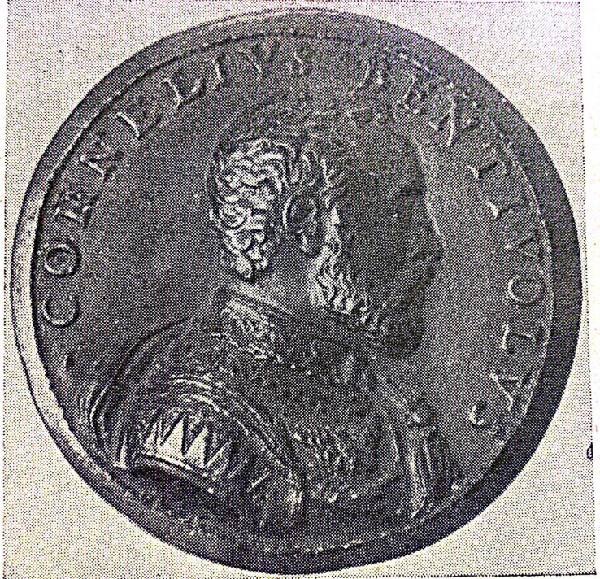

Dimora cinquecentesca nel cuore di Ferrara
Stemma della famiglia Bentivoglio
Secondo la tradizione, il casato vantava di discendere da re Enzo di Svevia, figlio dell'Imperatore e Re di Sicilia Federico II. Secondo una delle numerose leggende popolari, capostipite della casata fu un omonimo Bentivoglio, figlio naturale di Enzo (prigioniero a Bologna nel palazzo di famiglia) e di una contadina, Lucia di Viadagola. Il nome del bambino deriverebbe dalle parole che Enzo ripeteva a Lucia: "Amor mio, ben ti voglio”
Ritratto di Cornelio Bentivoglio, Anonimo, Bologna
Cornelio Bentivoglio, nato a Ferrara nel 1519, era pronipote di Giovanni II, lo spodestato signore di Bologna;
il suo avo Annibale II Bentivoglio nel 1487 aveva sposato Lucrezia d’Este, figlia naturale del duca Ercole I, e aveva dovuto rifugiarsi a Ferrara nel 1512,
quando i Bentivoglio dovettero per l’ultima volta abbandonare Bologna per la ritirata dei Francesi dall’Italia.
Annibale Bentivoglio era cognato del duca regnante Alfonso I, il quale allora si trovava impegnato in una lotta contro papa Giulio III e i suoi successori, che lo consideravano decaduto dal ducato di Ferrara.
Il giovane Cornelio Bentivoglio, nipote di Annibale e figlio di Costanzo Bentivoglio e Costanza Elena Rangoni, vagheggiava la restaurazione della signoria di Bologna.
Dal 1548 al 1551 Cornelio Bentivoglio, insieme a Piero Strozzi, affronta numerose battaglie con le truppe francesi.
Fece anche un'irruzione a Crevalcore, già in territorio pontificio, e mise a ferro e fuoco le campagne del Bolognese spargendo il terrore nella città.
Alla battaglia di Marciano (presso Arezzo) Cornelio Bentivoglio era alla testa della retroguardia.
Dando prova di vera perizia militare, Cornelio fu sollecitato a coprire la ritirata di Piero Strozzi, tornò con le poche truppe rimaste a Siena,
dove contribuì valorosamente alla difesa della città, guadagnandosi l'ammirazione e la riconoscenza della cittadinanza che lo nominò gentiluomo senese.
Quando fu decisa la spedizione in Italia di un esercito francese sotto il comando del duca di Guisa, in apparenza per portare aiuto al papa Paolo IV,
assalito dalle soldatesche del re di Spagna, ma in realtà per tentare la conquista del regno di Napoli, Cornelio Bentivoglio, il 16 novembre 1556, fu nominato dal re Enrico II generale di artiglieria.
Il duca Ercole II di Ferrara, alleato della Francia, lo richiese al re per metterlo a fianco del principe Alfonso, l'erede del trono ducale.
Come luogotenente del principe, Cornelio partecipò alla campagna del 1557 contro l’esercito imperiale; nel gennaio del 1558 le truppe estensi,
sotto la guida del Bentivoglio, occuparono Guardasone in territorio parmigiano.
In seguito alla pace (18 marzo 1558) conclusa tra il re Filippo di Spagna ed Ercole II, sotto gli auspici del duca di Firenze Cosimo I,
fu stabilito il matrimonio del principe Alfonso d'Este con Lucrezia de' Medici, figlia di Cosimo, e nel giugno del 1558, Cornelio Bentivoglio,
insieme ad altri funzionari di corte, accompagnava il principe a Firenze, ove furono celebrate le nozze.
Il trattato di pace riconosceva la neutralità del duca di Ferrara, il quale rimaneva amico del re di Francia e del re di Spagna,
e il principe Alfonso, fedele agli obblighi che lo legavano alla Corona di Francia, ritornò immediatamente alla corte di Enrico II,
che continuava la guerra con la Spagna nella speranza di vendicare la disfatta di San Quintino.
Il 19 gennaio 1559 Enrico II eleggeva Cornelio Bentivoglio suo Luogotenente generale in Toscana.
Avvalendosi del prestigio di cui meritatamente godeva, egli seppe far opera di persuasione e di pacificazione,
reprimendo ogni moto sovversivo e sedando le rivolte dei soldati, e in quei momenti così difficili mantenne l'ordine e contribuì alla concordia dei cittadini.
cartina
Nel 1539 sposò Leonarda d'Este, figlia di Scipione d'Este.
La moglie era pertanto nipote di Meliaduse d'Este, figlio illegittimo del marchese di Ferrara, Niccolò III d'Este.
Rimasto vedovo di Leonarda Cornelio Bentivoglio, benché avesse varcato di qualche anno la cinquantina,
passò a seconde nozze il 1 luglio 1573, con Isabella Bendedei, la sorella minore di quella Lucrezia Bendedei,
più nota sotto il nome poetico di Bendi-dio, che fu cantata da Torquato Tasso e dal segretario ducale Giambattista Pigna.
Da questo secondo matrimonio nacque il celebre cardinale Guido Bentivoglio, insigne prelato e storico delle Fiandre.
Dal matrimonio con Leonarda d'Este nacquero:
Dal matrimonio con Isabella Bendidio nacquero:
Albero genealogico della famiglia Bentivoglio
Esiliato da Ferrara dopo l’omicidio di Galeotto Malatesta.
Francia: Dopo un momento critico della sua vita dove trovò aiuto e protezione nel re Francesco I, divenne uno dei più zelanti e ferventi partigiani della Francia.
Il Delfino, il futuro re Enrico II, mostra di apprezzare assai le doti militari di Cornelio Bentivoglio, quasi suo coetaneo, e gli dà prove di affetto.
Il 17 febbraio 1545 egli scrive una lettera al duca Ercole II, pregando di permettere a Cornelio il ritorno a Ferrara, non ritenendolo responsabile dell’omicidio di Galeotto Malatesta.
Ma è legge a Ferrara che un bandito per reato di sangue non possa ritornare in patria, se prima non ha ottenuto la così detta “pace” della parte offesa:
privata riconciliazione che si faceva in forma solenne, nella quale le due parti avverse si promettevano la reciproca remissione di ogni offesa,
giuravano di non far rappresaglie o vendette, di rinunciare ad ogni azione giudiziaria né di vivere in concordia.
Il duca spiega come non poteva consentire alla richiesta del Delfino, poiché Cornelio non aveva la pace dagli offesi.
Nel 1548 Cornelio tornò a Ferrara dopo che fu prosciolto dal bando, grazie ad Enrico II.
Incisione di Cornelio Bentivoglio in età matura,
Gabinetto delle Stampe, Biblioteca Nazionale di Parigi
cartina
Nel 1542 venne imputato dell’uccisione di Galeotto Malatesta, cugino di primo grado del padre. Sebbene questo accaduto sia avvolto nel più profondo mistero, sappiamo che tentò di scagionarsi attraverso una lettera nella quale smentisce le accuse fattegli. Cornelio Bentivoglio fu bandito da tutto lo Stato estense, e la famiglia Malatesta non pensò che a vendicare la morte del congiunto.
In quegli anni della sua agitata giovinezza due altre gravi imputazioni pesano su Cornelio:
era di moda nelle corti francesi divertirsi con giochi di estrema violenza e durante uno di questi Cornelio scagliò un pesante mobile che uccise Francesco di Borbone.
Gli storici moderni ritengono che l’azione di Cornelio Bentivoglio, che fu sempre al seguito del Delfino,
avesse voluto sbarazzare il suo signore di un suo rivale troppo temibile per la reputazione di cui godeva.
In seguito a questo atto brutale, fu sfrattato dalla corte.
In quello stesso anno a Bologna, mediante lo scoppio di un carico di polvere introdotto nella cantina, fu fatta saltare la casa di monsignor Lippo Ghislieri,
che aveva ragioni di rancore verso la famiglia Bentivoglio.
La voce pubblica designò subito come responsabile e principale artefice del reato Cornelio.
Esecutore materiale del delitto fu invece il capitano Antonio Mastino detto Gramigna, bolognese,
che prima di darsi al mestiere delle armi era stato uomo di fatica nelle cantine e poi divenuto gran servitore e factotum della famiglia Bentivoglio dimorante a Ferrara.
Fatto il colpo, il Gramigna e i suoi si calarono dalle mura e raggiunsero Guido Bentivoglio e il conte Ranucci che li attendevano, poi insieme galopparono verso Ferrara.
Il capitano Antonio Mastino, con un manifesto del 1547, si assunse tutta la responsabilità dell’uccisione del Ghislieri per vendicarsi delle persecuzioni patite e del bando.
Si vantava inoltre di aver levato dal mondo “il più fiero e abominevole mostro che fosse mai”.
Nessuno credette al Gramigna, e anzi a Bologna ricominciò a istruire un processo a carico di Cornelio, come mandante dell’assasinio.
A seguito dell’occupazione di Piacenza da parte delle milizie imperiali, la casa Farnese per salvarsi dovette mettersi sotto la protezione del re di Francia, a favore di Cornelio.
Il Legato di Bologna ricevette dal cardinale Alessandro Farnese l’ordine di rinviare il procedimento giudiziario.
Il Bentivoglio, sentendosi minacciato, ebbe cura di eliminare un testimone: il capitano Gramigna, esecutore del delitto.
Lo fece arrestare su una falsa accusa di molestia sessuale verso un frate e subito dopo venne impiccato.
Nel giugno del 1565, dopo 18 anni di silenzio, il processo contro Cornelio venne ripreso.
In una lettera Bernardo Canigiani dice che l’opinione pubblica era tutta contro il Bentivoglio “et il miglior epiteto che se li dia si è di traditore e assassino”.
In quell’occasione Girolamo Ranucci, consapevole e complice, dell’uccisione del Ghislieri, fu incarcerato a Bologna, messo alla tortura e indotto così a rivelare tutta la trama.
Cornelio si rifiutò di comparire a Roma, adducendo la sua qualità di cavaliere del supremo Ordine di San Michele di Francia, ma grazie al Ranucci egli venne condannato a morte e alla confisca dei beni.
Cornelio e Guido Bentivoglio assunsero un atteggiamento di innocenti calunniati.
Guido invio una lettera al duca di Urbino, facendo sapere che si procedeva contro di lui in termini “fuor d’ogni ragione”;
al contempo Cornelio scriveva al duca Cosimo de’ Medici per protestare la sua innocenza.
Cornelio chiedeva che si costituisse un tribunale fuori dallo Stato ecclesiastico, in modo che egli potesse giustificarsi da “gentiluomo d’honore”.
I due fratelli furono condannati in contumacia, ma nel dicembre del 1565 morì Papa Pio IV che aveva riesumato il processo, e Cornelio tornò in possesso dei beni confiscatigli nel territorio bolognese.
I due Bentivoglio, per giustificarsi di fronte all’opinione pubblica, dichiararono che Ranucci sotto minacce e torture era stato costretto a dire cose contro la verità.
Successivamente il conte Girolamo Ranucci, obbligato a mantenere il segreto, affermò che fu stato forzato dichiarare falsa imputazione contro i fratelli Bentivoglio, mentre era nelle carceri di Bologna.
Anche in questo caso l’opinione pubblica non ci credette e imputò ai due fratelli l’uccisione del Ghislieri.
Il 26 maggio 1585, poco dopo che erano state condotte a termine le decorazioni ornamentali del suo monumentale palazzo in via della Rotta (oggi Via Garibaldi) da lui ampliato e abbellito, Cornelio Bentivoglio veniva a morte. Ebbe un funerale principesco a cui partecipò tutta la corte, e per sua disposizione testamentaria venne sepolto accanto al padre e al nonno, nella chiesa ora distrutta di Santa Maria degli Angeli.
Cornelio Bentivoglio in giovane età,
medaglia di Pastorino Pastorini da Siena, Museo Civico di Bologna